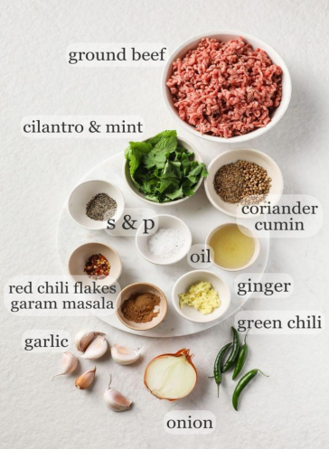

Seekh Kebab:

Ingredients:
2 tsp coriander seeds
2 tsp cumin seeds
1/2 small to medium (~75-85 g) yellow onion, roughly chopped
4 small(5 g) green chili peppers such as Thai Chili,sliced
1/4 cup (~8 g) cilantro leaves
2 tbsp (~2 g) mint leaves
1 lb (454 g) ground beef (20% fat – not lean), or sub ground meat of choice
1 1/4 tsp kosher salt, See Note 1
1 tbsp (5-6 garlic cloves) crushed garlic
3/4 tbsp crushed ginger
1 tsp freshly ground black pepper
1/2 tsp red chili flakes
1 tsp garam masala, See Note 1
1 tsp papaya paste, optional – for extra tender kebabs
neutral oil (for searing), as needed.

Instructions:
1. Heat a small skillet over medium heat. Add the cumin seeds and coriander seeds. Toast, stirring and
shaking the skillet often,for 2-3 minutes. The seeds will deepen in color and become highly
aromatic. Remove from heat, allow to cool slightly, and grind to a powder in a spice grinder or
mortar and pestle.
2. Strain and pat out any excess moisture from the ground beef and place into a large bowl or bowl of
a stand mixer. The kebab mixture should be as dry as possible to prevent any breaking.
3. Add the onion, cilantro, mint, and green chili peppers to a food processor. Using the pulse function,
finely chop (but not blend) them to a coarse mixture (~17 pulses). You may need to pause and
scrape down the sides in between. Remove the onion mixture, squeeze out the excess moisture
between your hands, and add to the beef.
4. Add the salt, garlic, ginger, black pepper, red chili flakes, garam masala, toasted & ground cumin &
coriander, and papaya paste (if using). Mix well.
5. Using gloved hands (do not use bare hands or the green chili may sting), knead for 3-4 minutes,
until you begin to see a lacy, stringy texture (resha) of the meat. (Alternatively, you can use the
paddle attachment of a food processor and knead on medium speed for 2 minutes.) The mixture
should be homogenous instead of crumbly.
6. Cover the bowl and set aside for 30 minutes, or refrigerate up to overnight.
7. To test a piece for taste, heat a small pan over medium-high heat. Add a small amount of neutral oil
and place a piece of the beef mixture on the pan to cook, turning over as needed. Taste and adjust
salt and seasoning if desired.
8. Using oiled hands, take around 1/4 cup of themeat and form into a hearty round shape. Run the
kebab skewers through the meat and use your hands to form a sausage-like shape around the
skewer. It should come to 5-6 inches long. (See Note on how to freeze.)
For Pan-Frying:
Heat a large, nonstick or cast iron skillet over medium or medium-high heat. Add enough oil to coat the bottom of the pan. When the oil is hot, place the kebabs on the pan, making sure not to crowd them. Use tongs to turn the kebabs frequently, making sure all sides are browned evenly. Cook for 6-7 minutes in total. If you have a meat thermometer, it should read at least 160 °F. Transfer the kebabs to a large plate lined with a paper towel.